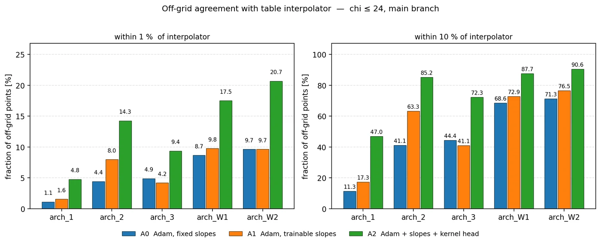
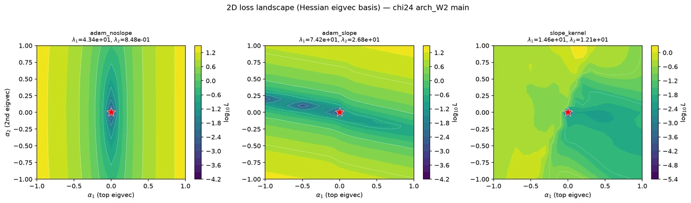

Building the simulation tools industry needs but doesn't have yet. I specialize in physics-informed machine learning for combustion CFD—delivering models that are fast, memory-efficient, and grounded in fundamental physics.
CFD + ML projects: surrogate modeling, solver integration, and validation for reacting flows.
DNK framework: 99% flamelet table compression (7 GB → 800 KB) with preserved accuracy. Combustion and Flame (2026).
SOBC clustering for species grouping; ML coupled to CONVERGE via TensorFlow C API. Validated on ECN Spray A (<8% ignition delay, <5% lift-off error).
TLS for premixed methane-air (4-step, 8-species, 256³); validated in thin reaction zone regime.
High correlation for small-scale terms; coarse 3D + 1D small-scale lines as compact LES alternative.
Plasma flow reactor (PFR) for iso-octane pyrolysis/oxidation (300–1200 K); 0D solver in Fortran + CHEMKIN.
Nanosecond plasma + GC-MS; plasma accelerates low-T decomposition (12th National Combustion Meeting).
OpenFOAM + CRECK soot model for IBE/diesel surrogate blends; PAH and soot precursor analysis.
Co-authored 12th U.S. National Combustion Meeting (sooting tendencies, alternative fuels).
Current projects in progress. Code is kept in private repositories and is available on request.
A controlled ablation of what actually makes the deep neural kernel work. Four training configurations for the UFPV source term ω̇ (inputs χ, C, Z̃″², Z̃) were compared on the same MLP backbone across five architectures and two χ ranges. The study measured off-grid generalization, training convergence and loss-landscape geometry.


Configurations. A0: Adam with fixed sigmoid slopes (baseline). A1: Adam with trainable per-neuron activation slopes. A2: A1 plus an RBF kernel regression head on the learned features (the deep neural kernel). LM: Levenberg–Marquardt as a second-order reference.
Building compressed UFPV tables directly from presumed-PDF convolutions, without ever constructing the full table. The number of table entries grows exponentially with the number of control variables, and each entry costs a convolution, so generating the full table is often the real bottleneck. This project evaluates only the entries a compressed representation actually needs.
Side projects outside my main research, exploring optimization, LLM agents and scientific software.
Ask a combustion question in plain English, for example "ignition delay of H₂/air at φ = 0.5, 1200 K, 10 atm", and get a computed, interpreted answer. A four-stage LLM pipeline plans the simulation, writes Cantera code, runs it in a sandbox, checks that the result is physically plausible and explains it. No knowledge of the Cantera API is needed.
Using a genetic algorithm to decide where electronics are mounted inside a CubeSat so that every component stays within its temperature limit over a full orbit. The optimizer is coupled to a nodal thermal model of the FUNcube-1 satellite with orbital heating.
Peer-reviewed work at the intersection of CFD and machine learning.
Liquid-fueled reactor network (LFRN) for reduced-order modeling of gas turbine combustors, adding reactors for spray breakup, droplet heating and evaporation. Validated against CFD of a liquid-fueled can combustor, it substantially reduces NOx error compared with gaseous reactor networks while keeping outlet temperatures accurate, and runs in O(10 s) on a single CPU core, over 1,000× faster than CFD.
Hybrid neural-kernel framework for compact flamelet tables (99% memory reduction, 7 GB → 800 KB); high accuracy for spray flames at 800–1100 K.
Conference talks on CFD, ML surrogates, and reacting-flow modeling.
CFD solvers, ML frameworks, and HPC tools I use daily.
Visuals from research and projects.